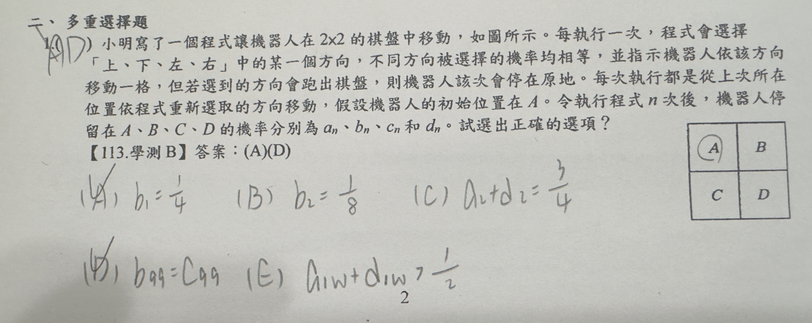

機器人在 2×2 棋盤移動
小明寫了一個程式讓機器人在 2×2 的棋盤中移動。每執行一次，程式會從「上、下、左、右」中等機率選一個方向，指示機器人移動一格；若選到的方向會跑出棋盤，該次就停在原地。機器人初始位置在 $A$。令執行 $n$ 次後，機器人停在 $A、B、C、D$ 的機率分別為 $a_n、b_n、c_n、d_n$。選出正確的選項。
- (A) $b_1=\frac14$
- (B) $b_2=\frac18$
- (C) $a_2+d_2=\frac34$
- (D) $b_{99}=c_{99}$
- (E) $a_{100}+d_{100}>\frac12$
看原題照片

💡 提示（先想想看）
先別管 $a_n、b_n$ 這些符號。站在 $A$，把「上、下、左、右」四個方向各畫一支箭頭、各標 $\frac14$，看看每支箭頭最後讓機器人停在哪一格。
📘 完整解析
Step 1 看懂「走一步」：四支箭頭，各 $\frac14$
機器人在 $A$ 時，四個方向每個都是 $\frac14$：
| 選到的方向 | 機率 | 結果 |
|---|---|---|
| 上 | $\frac14$ | 出界 → 留在 $A$ |
| 左 | $\frac14$ | 出界 → 留在 $A$ |
| 右 | $\frac14$ | 走到 $B$ |
| 下 | $\frac14$ | 走到 $C$ |
所以「上」和「左」這兩支 $\frac14$ 加起來，留在原地的機率是 $\frac14+\frac14=\frac12$。
走一步：留在原地 $\frac12$ ｜ 往橫向鄰格 $\frac14$ ｜ 往直向鄰格 $\frac14$ ｜ 斜對角 $0$
棋盤只有 4 格，每一格都是角落，所以不管機器人在哪一格，規則都一樣：兩個方向會出界、兩個方向可以走。例如在 $B$：上、右出界（留在 $B$ 共 $\frac12$），左到 $A$ $\frac14$，下到 $D$ $\frac14$。
Step 2 選項 (A)：走 1 步
從 $A$ 走一步到 $B$，只有「選到右」這一種，機率 $\frac14$。
- (A) $b_1=\frac14$ ✔
順便記下第 1 步後的位置：$A$ 是 $\frac12$、$B$ 是 $\frac14$、$C$ 是 $\frac14$、$D$ 是 $0$（一步走不到斜對角）。
Step 3 選項 (B)(C)：走 2 步，把路線一條一條列出來
走兩步的機率＝第一步的機率 × 第二步的機率，同一個終點的路線再相加。
| 終點 | 路線 | 機率 | 合計 |
|---|---|---|---|
| $A$ | $A\to A\to A$（留、留） | $\frac12\times\frac12=\frac14$ | $a_2=\frac38$ |
| $A\to B\to A$（右、左） | $\frac14\times\frac14=\frac1{16}$ | ||
| $A\to C\to A$（下、上） | $\frac14\times\frac14=\frac1{16}$ | ||
| $B$ | $A\to A\to B$（留、右） | $\frac12\times\frac14=\frac18$ | $b_2=\frac14$ |
| $A\to B\to B$（右、留） | $\frac14\times\frac12=\frac18$ | ||
| $C$ | $A\to A\to C$（留、下） | $\frac12\times\frac14=\frac18$ | $c_2=\frac14$ |
| $A\to C\to C$（下、留） | $\frac14\times\frac12=\frac18$ | ||
| $D$ | $A\to B\to D$（右、下） | $\frac14\times\frac14=\frac1{16}$ | $d_2=\frac18$ |
| $A\to C\to D$（下、右） | $\frac14\times\frac14=\frac1{16}$ |
檢查：$\frac38+\frac14+\frac14+\frac18=1$ ✔（四格機率加起來一定是 1）
常見錯誤：只算到「$A\to A\to B$」這一條，得到 $\frac18$，就會誤選 (B)。記得「先留原地再走」和「先走再留原地」是兩條不同路線。
- (B) ✘ $b_2=\frac18+\frac18=\frac14$，不是 $\frac18$。
- (C) ✘ $a_2+d_2=\frac38+\frac18=\frac12$，不是 $\frac34$。
Step 4 選項 (D)：$B$ 和 $C$ 是「鏡子兩邊」
沿著 $A$–$D$ 這條對角線把棋盤對折，$B$ 剛好疊到 $C$。而且「右」和「下」機率一樣都是 $\frac14$，所以每一條走到 $B$ 的路線，對折後都有一條機率完全一樣的路線走到 $C$（上面表格裡 $B$、$C$ 兩列就是這樣一一對應）。不管走幾步都一樣：
- (D) $b_{99}=c_{99}$ ✔
Step 5 選項 (E)：用「塗顏色」看穿
把 $A$、$D$ 塗上顏色，$B$、$C$ 留空白（像西洋棋盤）。觀察每走一步：
- 出界（2 個方向，共 $\frac12$）→ 留在原地 → 顏色不變
- 真的移動（2 個方向，共 $\frac12$）→ 一定走到隔壁格，隔壁格一定是另一種顏色
所以每走一步，就像丟一次硬幣：一半機率變色、一半機率不變。不管上一步在哪裡，走完之後在塗色格（$A$ 或 $D$）的機率都是 $\frac12$：
$a_n+d_n=\frac12\quad(n\ge1)$
這跟 Step 3 算出的 $a_2+d_2=\frac12$ 一致，也能順便秒殺 (C)。
- (E) ✘ $a_{100}+d_{100}$ 剛好等於 $\frac12$，不會「大於」$\frac12$。
🧪 動手算：前幾步的機率表
拉動步數看看：$b_n$ 是不是永遠等於 $c_n$？$a_n+d_n$ 是不是一直是 $\frac12$？